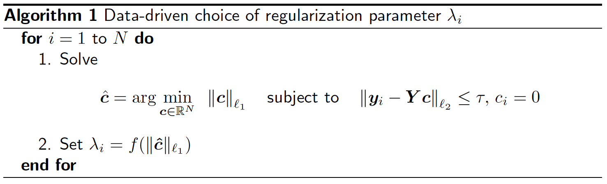

Algorithms
Here we explain the setup and algorithm when the data points reside on linear subspaces, the algorithm can also cluster affine subspaces with simple modifications (see Section 2.2 of Robust Subspace Clustering for further detail).
Setup and notation
 points in
points in  dimensions
dimensions ![mathbf{Y}=[y_1, y_2, ldots, y_N]](eqs/65361908895111949-130.png) normalized to have unit Euclidean norm
normalized to have unit Euclidean norm  .
.
Noisy problem

 : clean data points. Columns of belong to union of subspaces
: clean data points. Columns of belong to union of subspaces  of unknown dimensions
of unknown dimensions  .
. : noise. Each column has bounded norm
: noise. Each column has bounded norm  .
.
 |
Missing data problem

- : clean data points. Columns of belong to union of subspaces of unknown dimensions .
 is an operator that zeros out each entry with probability
is an operator that zeros out each entry with probability  .
.
 |
General Structure
The general structure of the algorithm follows the standard machine:
Construct affinity matrix
 between samples producing a weighted graph.
between samples producing a weighted graph.Construct clusters by applying spectral clustering to
.Apply PCA to each cluster.
Following Sparse Subspace Clustering (SSC) of Elhamifar and Vidal, we use ideas from sparse representation theory and sparse regression to compute affinities.
Sparse regression
We first, calculate a sparse coefficient sequence  obtained by regressing the
obtained by regressing the  th data point
th data point  onto all other data points
onto all other data points  . The hope is that such a sparse representation of would only select vectors from the cluster in which belongs to. This is depicted in the figure below with each color denoting points from a different cluster.
. The hope is that such a sparse representation of would only select vectors from the cluster in which belongs to. This is depicted in the figure below with each color denoting points from a different cluster.
We propose two strategies for the sparse regression step below.
Two step procedure with data-driven regularization.
Bias-corrected Dantzig Selector.
 |
Building a graph based on the sparse coefficients
We set

After applying a permutation which makes sure that columns in the same cluster are contiguous we expect the affinity matrix to look like the figure below where each block corresponds to a different cluster.
 |
Two Step Procedure with Data Driven Regularization
For 
 |
We choose  in a data driven fashion:
in a data driven fashion:
|  |
Choice of parameters:  .
.
Bias-corrected Dantzig Selector
Again regress one against the others this time by Dantzig Selector.
 subject to
subject to  .
.
 and
and  .
.
In practice we only get to observe the noisy versions and .
Solution: Build unbiased estimators for  and
and  . Set
. Set

Finally, we arrive at at the following sequence of optimization problems.
subject to  .
.
Choice of parameters:  .
.
Bias-corrected Dantzig Selector for missing data
 denotes the observations from the -th column of the clean data matrix
denotes the observations from the -th column of the clean data matrix
 denotes the submatrix of with rows selected by
denotes the submatrix of with rows selected by  .
.
Again regress one against the others this time by Dantzig Selector.
subject to .
 and
and  .
.
In practice we only get to observe a few entries.
Solution: Again build unbiased estimators for and  . Set
. Set
We build a matrix  based on the observed entries of as follows. Set
based on the observed entries of as follows. Set  if observed and
if observed and  if missing.
if missing.
Set  with the th row and column set to zero.
with the th row and column set to zero.
Set  with the th row set to zero.
with the th row set to zero.
Finally, we arrive at
subject to .
Choice of parameters:  , where
, where  number of missing entries/total number of entries.
number of missing entries/total number of entries.